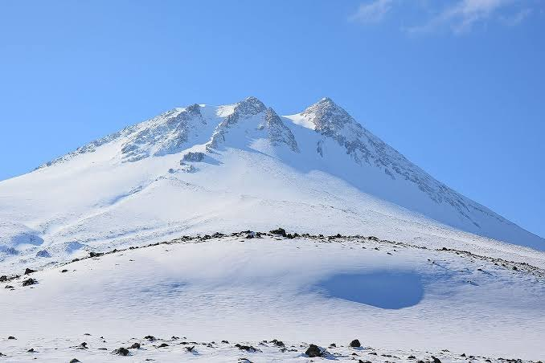
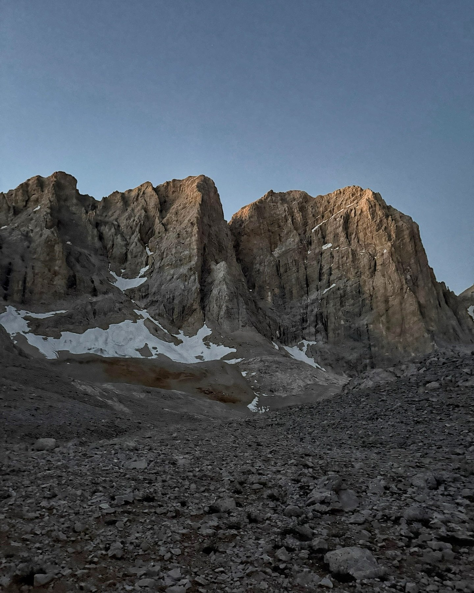

Hasan Dağı
3,268 m · Feb 2026 · Central Anatolia
Winter ascent. The volcanic summit above the Cappadocian plains offers sweeping views over the steppe in snowy conditions.
Every peak reached — 4 summits, highest at 3,723 m.

3,268 m · Feb 2026 · Central Anatolia
Winter ascent. The volcanic summit above the Cappadocian plains offers sweeping views over the steppe in snowy conditions.
3,723 m · Jul 2026 · Aladağlar
The highest peak in this Aladağlar journal. Steep scree and mixed terrain throughout.

3,454 m + 3,300 m · Jul 2026 · Aladağlar
Yıldızbaşı and Yıldızbatı form one connected summit story: two peaks reached in a single ridge traverse.